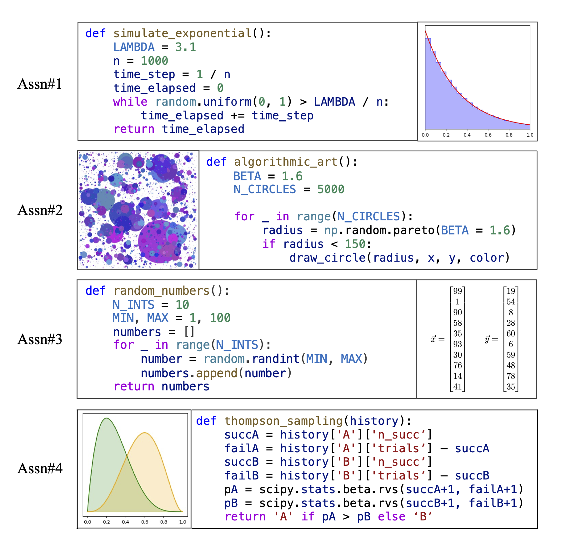

About Me
Hello! I'm Jadon Geathers, an Information Science PhD student in the Bowers College of Computing and Information Science (CIS) at Cornell University. I work in the Future of Learning Lab, where my research is advised by Professor Rene Kizilcec. Additionally, I am a CIS Dean's Excellence and Hopper-Dean Fellow.
Through my research, I aim to create educational tools that shape pedagogical approaches, measure student understanding, and encourage inclusive, enjoyable, and equitable learning environments. I believe education is crucial for illuminating life pathways, promoting sociocultural awareness, and inspiring innovation, so I view educational technology research as a keystone for advancing the state of the world.
Publications
-

Grading and Clustering Student Programs That Produce Probabilistic Output
Yunsung Kim*, Jadon Geathers* (Equal Contribution), Chris Piech
EDM 2024.
StochasticGrade is an open-source framework for automatically grading stochastic programs. Compared to standard two-sample hypothesis testing, it offers significant improvements in accuracy, exponential improvements in speed, control over grading error rates, and clustering of student programs by error type. We demonstrate its effectiveness using data from introductory programming assignments and provide practical guidelines for implementation.